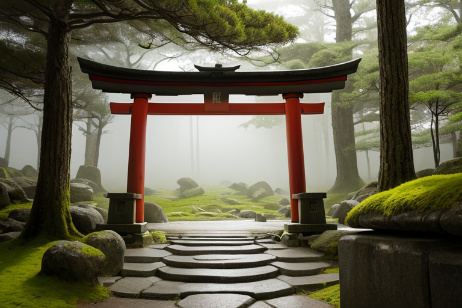
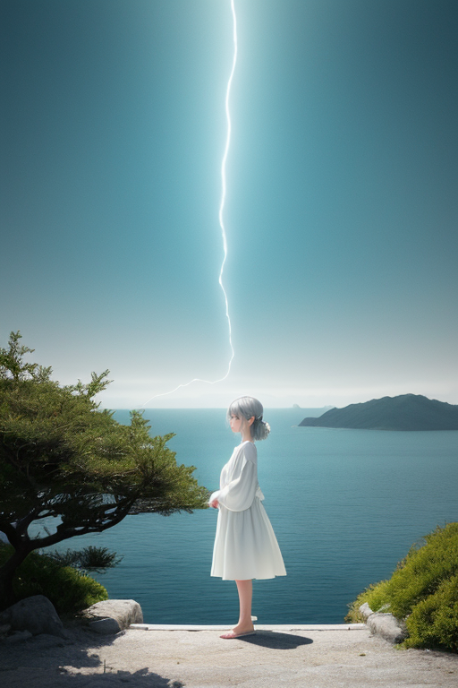
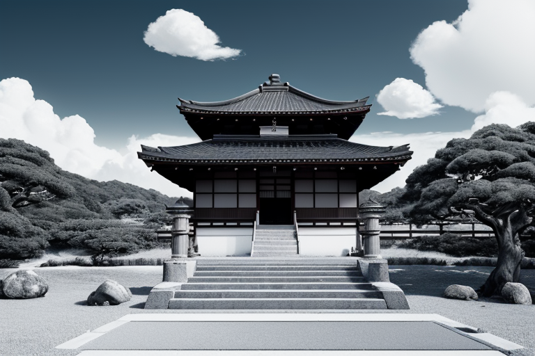
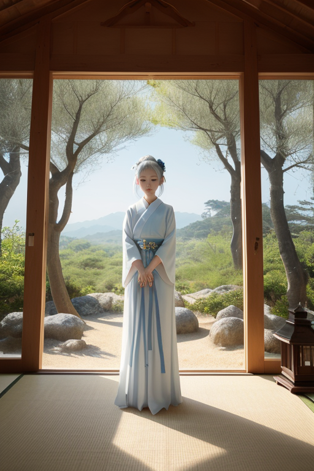
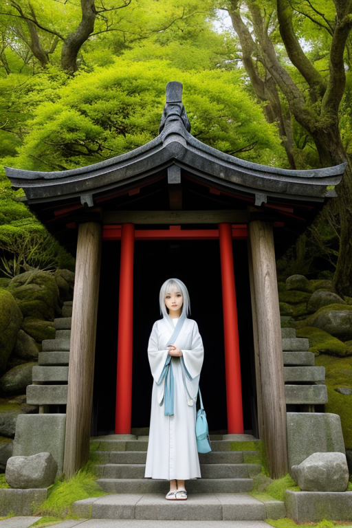

第一章 現実の香川
あなたはまだ気づいていない。この土地にも、王がいることを。
金刀比羅宮への石段は、登る者の心を濾過する。一歩ごとに世俗の雑音が削がれ、やがて残るのは己の呼吸と足音だけだ。ここでは、多くを望むことが愚かに思える。参道の石畳、杉の木立、そして遠くに広がる瀬戸内の海。すべてが厳かに、しかし確かに存在している。これ以上の装飾は不要だ。
その静寂の中心に、彼は立っていた。簡素王、カガワリア・ミニマ。その姿は、古びた石灯籠か、苔むした庭石と見分けがつかない。彼の王国「カガワリア・ミニマ」は、この土地の本質を体現していた。無駄なものは何一つない。空気も、光も、時間さえも、必要最小限に研ぎ澄まされている。
彼は問う。少なさは豊かさか？ この問いは、石段を登る者の心に、静かに落ちていく。

第二章 歪みの兆候
金刀比羅宮への石段は、祈りで磨かれて鈍い光を放っていた。簡素王は、その一段一段に宿る願いの密度を感じ取る。多くを望む声、失ったものへの嘆き、単なる慣習の呟き。それらは全て「無駄波」として王国の静寂を乱す雑音ではない。人間の感情そのものが、この土地の歪みを生む一因だからだ。
妖精ミニエルが、王の脇に静かに顕現した。「祈りのエネルギー、揺らいでいます。特に、『もっと』を求める念が増幅しています」。王は答えない。彼の目には、瀬戸内の海に浮かぶ無数の島々が見える。一つ一つの島は、必要最小限の輪郭で存在し、余分なものを海に委ねている。その在り方こそが、王国の理想だった。
しかし今、島々を結ぶ見えないエネルギーの流れに、よどみが生じ始めていた。それは物理的な歪みの前兆である。王は、小豆島のオリーブ畑から漂うかすかな香りに、ほんのわずかな焦げの気配を嗅ぎ取った。

第三章 王の葛藤
金刀比羅宮の石段は、無駄な装飾一つない。王はその一歩一歩を、自身の内面への問いかけとして登る。少なさは豊かさか。この問いは、彼がこの地に降り立った時から、風のように静かに吹き続けていた。彼は無駄を削ぎ落とし、必要最小限の調整を行うことで、歪みを整えてきた。それが彼の役割であり、王国の原理であった。
しかし、妖精たちの報告する「足りない」という人々の念。それは、削ぎ落とされた先に生まれる、別種の「歪み」ではなかったか。盆栽の職人が、一枝を切り落とすことで全体の調和を生むように、彼は災害の力を「削いで」きた。だが、切り落とされた枝の断面から、目には見えない「寂しさ」という名の樹液が滲んでいるとしたら。
彼は石段の途中で立ち止まり、掌を開いた。そこには、何もない。守るべきは物理的な均衡だけか。それとも、この島々に暮らす人々の、満たされぬと感じる心の隙間も、微調整の対象なのか。彼は、感情という名の余分なものを、今まで以上に強く感じ始めていた。

第四章 妖精との対話
金刀比羅宮の奥書院。簡素王は、庭の白砂に座る主席妖精ミニエルを見つめた。彼女は目を閉じ、何もない空間に向かって祈りを捧げているように見えた。
「何を祈っているのか」
「無駄波の静寂を。そして、削ぎ落とされたものたちの安寧を」
ミニエルの声は、風が砂紋を撫でる音よりかすかだった。彼女は、王が感じ始めた「寂しさ」の正体を、妖精の言葉で説明した。それは削がれた無駄波の残響であり、人々が「足りない」と感じる心の隙間に共鳴する微かな振動だという。
「我々はそれを消せません。ただ、その振動が暴走して歪みを増幅しないよう、鎮めるのです。祈りとは、その鎮魂の周波数です」
王は、小豆島のオリーブ畑で、一本の木が剪定された後の静けさを思い出した。切り口からは確かに寂しさが滲む。だが、その静寂がやがて新たな実りを育むための「間」となる。削ぎ落とすことと、豊かになることは、矛盾しないのか。
ミニエルは目を開けた。
「少なさそのものが豊かさなのではありません。少なさが生み出す『間』と『静寂』が、魂を整えるのです。これが、この土地の質感です」
王は、自分が調整してきた物理的な均衡の先に、もう一つの層があることを悟った。人々の心の「間」を守ることも、歪みの調整なのだ。

第五章 微調整と余韻
金刀比羅宮への石段を、一人の老人がゆっくりと登っていた。彼の心には、失ったものへの未練という歪んだ波が渦巻いていた。カガワリア・ミニマは、父母ヶ浜の静かな水面に立ち、その波紋を見つめた。手を動かす必要はなかった。彼はただ、自身の内側に生じた「間」の感覚を、そっと放った。
それは物理的な力ではない。過剰な執着を洗い流す、静寂そのものの拡がりだった。石段を登る老人の足が、ふと軽くなった。振り返らず、ただ一歩、また一歩と登り続けるその背中に、未練の波は消え、代わりに「ここに在ること」だけの静かな確かさが満ち始めた。これが、王の最後の微調整だった。物質的な均衡の先にある、心の余白の調整。
小豆島のオリーブ畑に吹く風は、何も運ばない。直島の美術館の空間は、多くを語らない。それは、少なさが生み出す「間」であり、その「間」こそが、豊かさの器となる。簡素王は問うた。少なさは豊かさか？ 答えは、彼がこの土地で感じ取った静寂そのものの中にあった。豊かさとは、満たされることではなく、満たされていると気づく、その「間」の感覚である。
あなたの町にも、王がいる。